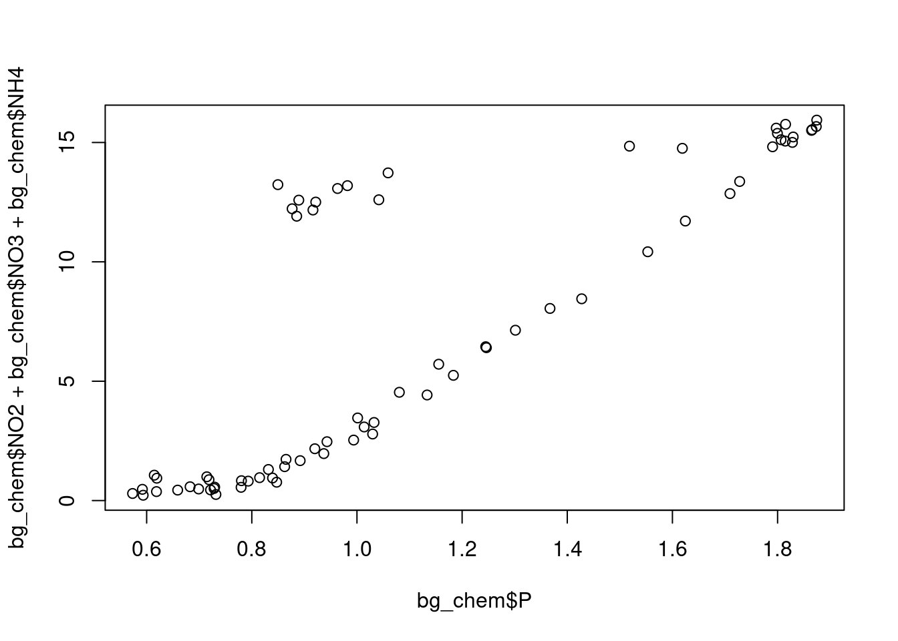

library(readr)
library(here)here() starts at /home/mbell/training_bellDescription and link to data
library(readr)
library(here)here() starts at /home/mbell/training_bellbg_chem <- read.csv(here:: here("data", "BGchem2008data.csv"))## Prints the column names of my data frame
colnames(bg_chem) [1] "Date" "Time" "Station" "Latitude"
[5] "Longitude" "Target_Depth" "CTD_Depth" "CTD_Salinity"
[9] "CTD_Temperature" "Bottle_Salinity" "d18O" "Ba"
[13] "Si" "NO3" "NO2" "NH4"
[17] "P" "TA" "O2" ## General structure of the data frame - shows class of each column
str(bg_chem)'data.frame': 70 obs. of 19 variables:
$ Date : chr "2008-03-21" "2008-03-21" "2008-03-21" "2008-03-21" ...
$ Time : chr "1899-12-31 21:56:46" "1899-12-31 21:56:46" "1899-12-31 21:56:46" "1899-12-31 21:56:46" ...
$ Station : chr "73N,140W" "73N,140W" "73N,140W" "73N,140W" ...
$ Latitude : num 73 73 73 73 73 ...
$ Longitude : num -140 -140 -140 -140 -140 ...
$ Target_Depth : int 20 60 85 190 310 20 60 85 190 310 ...
$ CTD_Depth : num 15.1 60.6 85.7 191.4 309.3 ...
$ CTD_Salinity : num 26.1 29.2 31.4 33.1 34.6 ...
$ CTD_Temperature: num -1.423 -0.934 -0.146 -1.478 0.258 ...
$ Bottle_Salinity: num 26.1 29.2 31.4 33.1 34.6 ...
$ d18O : num -3.5318 -3.1857 -2.1087 -1.4293 0.0847 ...
$ Ba : num 72.4 82.8 60.6 76.1 -99 ...
$ Si : num 2.46 2.82 7.54 36.58 8.06 ...
$ NO3 : num -0.0311 0.026 2.6964 15.8538 12.1601 ...
$ NO2 : num 0.0562 0.1726 0.0217 0.0246 -0.0013 ...
$ NH4 : num 0.1974 0.0558 0.0691 0.0591 0.0653 ...
$ P : num 0.593 0.732 1.03 1.875 0.877 ...
$ TA : num 1895 2094 2194 2268 2296 ...
$ O2 : num 9.25 -99 -99 -99 6.66 ...## First 6 lines of the data frame
head(bg_chem) Date Time Station Latitude Longitude Target_Depth
1 2008-03-21 1899-12-31 21:56:46 73N,140W 73.02083 -139.8885 20
2 2008-03-21 1899-12-31 21:56:46 73N,140W 73.02083 -139.8885 60
3 2008-03-21 1899-12-31 21:56:46 73N,140W 73.02083 -139.8885 85
4 2008-03-21 1899-12-31 21:56:46 73N,140W 73.02083 -139.8885 190
5 2008-03-21 1899-12-31 21:56:46 73N,140W 73.02083 -139.8885 310
6 2008-03-22 1899-12-31 21:45:27 72N,140W 72.05050 -140.1118 20
CTD_Depth CTD_Salinity CTD_Temperature Bottle_Salinity d18O Ba
1 15.1270 26.0658 -1.42300 26.0658 -3.53176972 72.40000
2 60.5559 29.1798 -0.93431 29.1798 -3.18565098 82.84798
3 85.7471 31.4023 -0.14583 31.4023 -2.10872671 60.55257
4 191.4073 33.1268 -1.47750 33.1268 -1.42934554 76.13382
5 309.2524 34.6233 0.25782 34.6233 0.08467729 -99.00000
6 20.9588 26.1788 -1.40070 26.1788 -3.52682553 70.68430
Si NO3 NO2 NH4 P TA O2
1 2.4599 -0.0311 0.05620 0.19740 0.59340 1895.2 9.246
2 2.8242 0.0260 0.17255 0.05575 0.73175 2094.5 -99.000
3 7.5436 2.6964 0.02170 0.06910 1.02980 2194.2 -99.000
4 36.5768 15.8538 0.02460 0.05910 1.87450 2268.4 -99.000
5 8.0634 12.1601 -0.00130 0.06530 0.87670 2296.5 6.656
6 2.7820 0.0480 0.04820 0.37390 0.59190 1902.9 9.186## Summary of each column of data
summary(bg_chem) Date Time Station Latitude
Length:70 Length:70 Length:70 Min. :72.05
Class :character Class :character Class :character 1st Qu.:72.97
Mode :character Mode :character Mode :character Median :74.05
Mean :74.04
3rd Qu.:75.26
Max. :76.32
Longitude Target_Depth CTD_Depth CTD_Salinity
Min. :-163.7 Min. : 20.0 Min. : 15.13 Min. :25.50
1st Qu.:-153.3 1st Qu.: 60.0 1st Qu.: 60.34 1st Qu.:30.17
Median :-149.8 Median : 85.0 Median : 85.78 Median :31.65
Mean :-148.1 Mean :123.8 Mean :125.42 Mean :31.45
3rd Qu.:-140.3 3rd Qu.:190.0 3rd Qu.:192.66 3rd Qu.:33.08
Max. :-136.5 Max. :430.0 Max. :442.17 Max. :34.82
CTD_Temperature Bottle_Salinity d18O Ba
Min. :-1.6843 Min. :25.50 Min. :-3.7310 Min. :-99.00
1st Qu.:-1.4906 1st Qu.:30.17 1st Qu.:-2.9615 1st Qu.: 64.08
Median :-1.2600 Median :31.65 Median :-2.0444 Median : 69.68
Mean :-0.9647 Mean :31.45 Mean :-2.0166 Mean : 60.95
3rd Qu.:-0.4777 3rd Qu.:33.08 3rd Qu.:-1.4939 3rd Qu.: 72.25
Max. : 0.7008 Max. :34.82 Max. : 0.2073 Max. : 86.09
Si NO3 NO2 NH4
Min. : 2.460 Min. :-0.0499 Min. :-0.00130 Min. :0.00535
1st Qu.: 3.915 1st Qu.: 0.7849 1st Qu.: 0.01285 1st Qu.:0.01603
Median : 8.424 Median : 4.7488 Median : 0.02475 Median :0.03465
Mean :13.292 Mean : 6.8571 Mean : 0.04766 Mean :0.05853
3rd Qu.:20.985 3rd Qu.:13.0425 3rd Qu.: 0.04469 3rd Qu.:0.06747
Max. :36.577 Max. :15.8538 Max. : 0.27300 Max. :0.37390
P TA O2
Min. :0.5732 Min. : -99 Min. :-99.000
1st Qu.:0.7986 1st Qu.:2136 1st Qu.:-99.000
Median :0.9725 Median :2203 Median :-99.000
Mean :1.1201 Mean :2089 Mean :-73.059
3rd Qu.:1.4956 3rd Qu.:2271 3rd Qu.:-99.000
Max. :1.8745 Max. :2312 Max. : 9.246 ## Prints unique values in a column (in this case Date)
unique(bg_chem$Date)[1] "2008-03-21" "2008-03-22" "2008-03-23" "2008-03-24" "2008-03-25"
[6] "2008-03-26" "2008-03-27" "2008-03-29" "2008-03-30"nitrate <- mean(bg_chem$NO3)
nitrite <- mean(bg_chem$NO2)
amm <- mean(bg_chem$NH4)
phos <- mean(bg_chem$P)ratio <- (nitrate + nitrite + amm)/phosplot(bg_chem$P, bg_chem$NO2 + bg_chem$NO3 + bg_chem$NH4)
The nitrogen to phosphorus ratio is 6